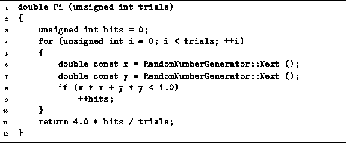

Data Structures and Algorithms
with Object-Oriented Design Patterns in C++
Data Structures and Algorithms
with Object-Oriented Design Patterns in C++
This section presents a simple, Monte Carlo algorithm
to compute the value of  from a sequence of random numbers.
Consider a square positioned in the x-y plane
with its bottom left corner at the origin as shown in Figure
from a sequence of random numbers.
Consider a square positioned in the x-y plane
with its bottom left corner at the origin as shown in Figure  .
The area of the square is
.
The area of the square is  ,
where r is the length of its sides.
A quarter circle is inscribed within the square.
Its radius is r and its center is at the origin of x-y plane.
The area of the quarter circle is
,
where r is the length of its sides.
A quarter circle is inscribed within the square.
Its radius is r and its center is at the origin of x-y plane.
The area of the quarter circle is  .
.

Figure: Illustration of a Monte Carlo Method for Computing 
Suppose we select a large number of points at random inside the square. Some fraction of these points will also lie inside the quarter circle. If the selected points are uniformly distributed, we expect the fraction of points in the quarter circle to be

Therefore by measuring f, we can compute  .
Program shows how this can be done.
.
Program shows how this can be done.

Program: Monte Carlo Program to Compute 
The Pi routine uses the RandomNumberGenerator defined
to generate (x,y) pairs uniformly distributed on the unit square (r=1).
Each point is tested to see if it falls inside the quarter circle.
A given point is inside the circle when its distance from the origin,
 is less than r.
In this case since r=1,
we simply test whether
is less than r.
In this case since r=1,
we simply test whether  .
.
How well does Program work?
When 1000 trials are conducted,
792 points are found to lie inside the circle.
This gives the value of 3.168 for  ,
which is only 0.8% too large.
When
,
which is only 0.8% too large.
When  trials are conducted,
78535956 points are found to lie inside the circle.
In this case, we get
trials are conducted,
78535956 points are found to lie inside the circle.
In this case, we get  which is within 0.005% of the correct value!
which is within 0.005% of the correct value!
 Copyright © 1997 by Bruno R. Preiss, P.Eng. All rights reserved.
Copyright © 1997 by Bruno R. Preiss, P.Eng. All rights reserved.